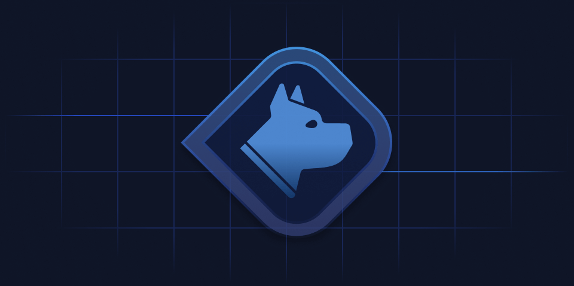
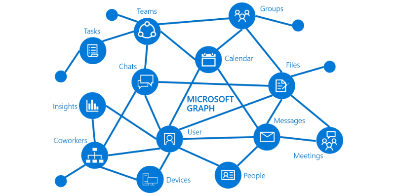
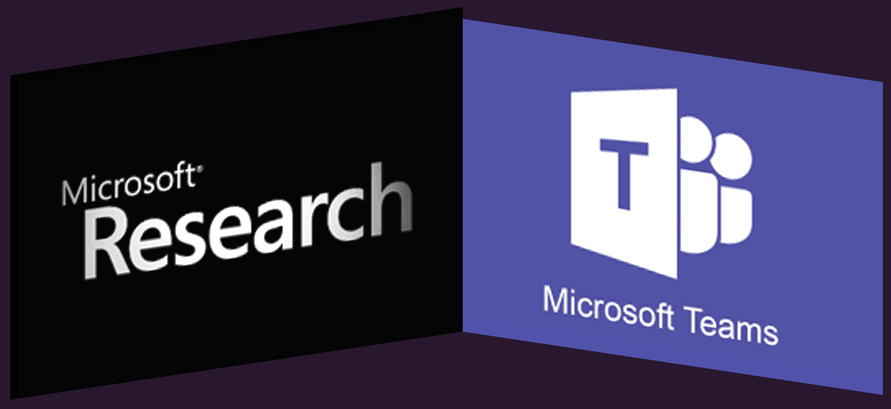

I am software developer
specializing in edge and
distributed systems. My
interests broadly include
backend, CI, optimization,
developing concurrent systems,
storage, and orchestration.
Some of my passion projects
have included leveraging
replica management protocols
normally found in cloud
platforms to help at-risk
populations (such as
journalists or emergency
response personnel), load
balancing video signals on edge
networks, and working with
populations in adverse
situations. Resume
Contributions

Corso
is the first
open-source
tool that aims
to assist IT
admins with the
critical task
of protecting
their Microsoft
365 data. It
provides a
reliable,
secure, and
efficient data
protection
engine. Admins
decide where to
store the
backup data and
have the
flexibility to
perform backups
of their
desired service
through an
intuitive
interface. As
Corso evolves,
it can become a
great building
block for more
complex data
protection
workflows.

Microsoft
Graph Go
SDK
Microsoft
Graph is the
gateway to data
and
intelligence in
Microsoft 365.
It provides a
unified
programmability
model that you
can use to
access the
tremendous
amount of data
in Microsoft
365.
I corrected
bugs in
(de)serailazation,
introduced test
frameworks for
embeded
repositories,
and interfaced
with Microsoft
developers for
feature
debugging.

Vegvisir Project
Software
solution for
using
mission-critical
applications on
IoT in
Disconnected,
Intermittent,
Low-band width
environments.
Creates a
tamperproof log
in extreme
environments
where emergency
first
responders are
not guaranteed
to have
connectivity.g
Product debuted
at the Public
Safety
Communications
in Research
(PSCR)
conference in
2018.

Hive Project
During the
pandemic, video
conferencing
became a
necessity for
many businesses
and families.
Protocols at
the time ensure
that all
applications
share bandwidth
equally. This is
not the optimal
outcome for video
conferencing usage.
A job presentation
would not have the
same priority as
being a passive
participant in a meeting.
Hive manages
bandwidth allocation
within a domain
by responding
to embedded tags from
managed
video stream
applications.
The project
environments
are maintained
within
Kubernetes
clusters.
Cross-cluster
communication
and telemetry
instrumented
with Envoy.
Get In Touch
I am available for speaking
engagements and consultation on
sustainability projects. I
generally respond between 3 - 5
business days. Non-specific
requests will not receive a
response. I am currently on the
job market.
{kind=link}
{kind=link}
{kind=link}